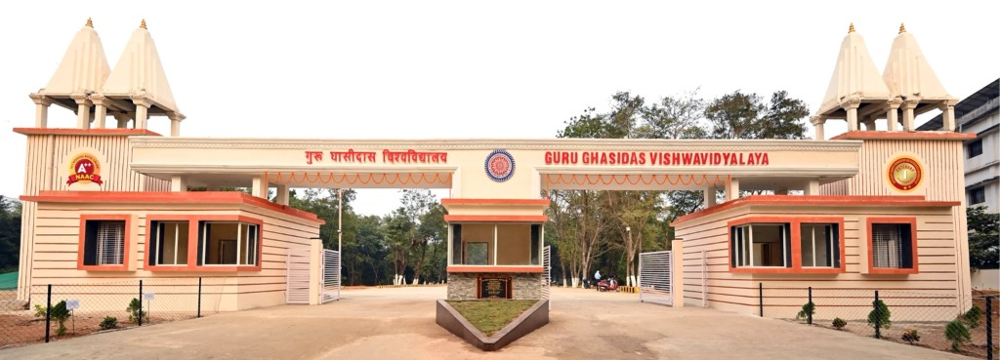
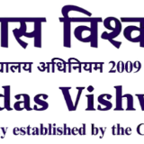
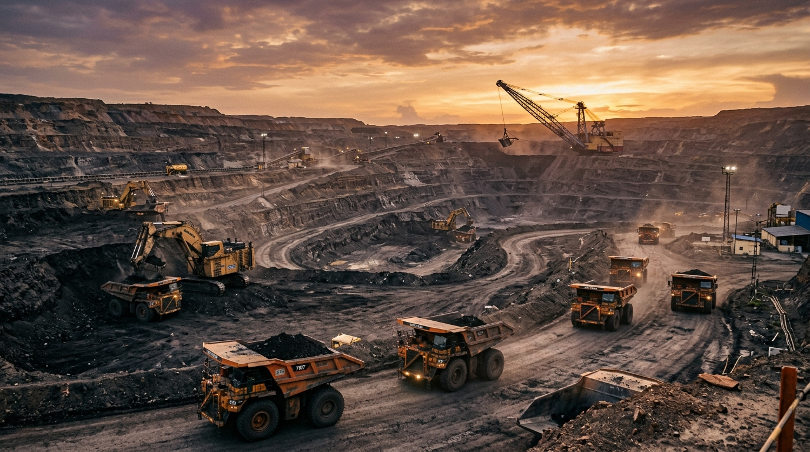
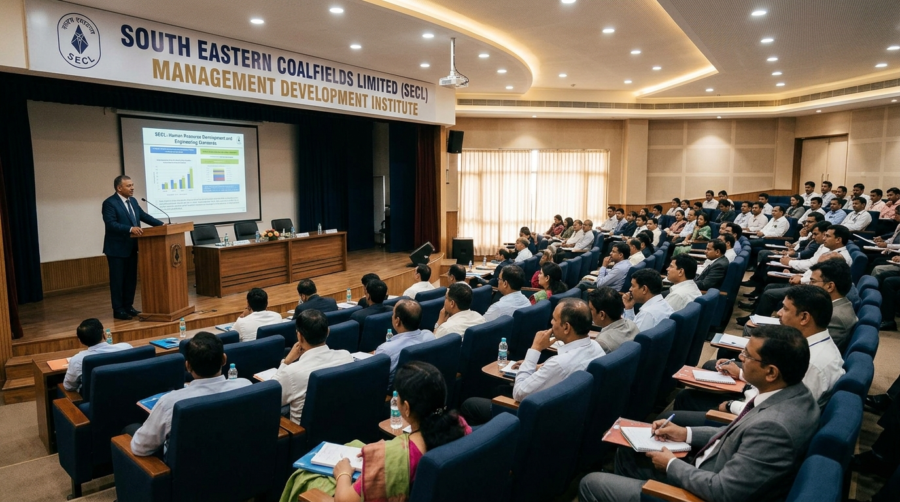

RECRUITMENT AND SELECTION PRACTICES AT SOUTH EASTERN COALFIELDS LIMITED (SECL), BILASPUR
Executive Summary — Overview of the Study
Study at a Glance
Main Objectives of the Study
- Organisational Context: Studying recruitment and selection practices in a large coal mining PSU.
- Manpower Planning Connection: Understanding how sanctioned posts and workforce planning create hiring requirements.
- Employee Administration: Examining how service books and employee records are maintained in Executive Establishment.
- Department Coordination: Understanding how Industrial Relations (IR) and HRD connect with recruitment.
- Theory to Practice: Connecting classroom HR concepts with real public sector workplace practices.
Departmental Exposure Rotation
Practical rotation across 4 key HR departments (7 + 7 + 7 + 9 Days)
Introduction — HR Lifecycle & Study Objectives
Background of HRM
HRM operates through a connected 5-stage employee lifecycle:
In a mining PSU like SECL, recruitment and selection cannot be treated as routine clerical tasks. They must be closely linked with manpower planning, legal rules, and continuous employee administration after joining.
Why Recruitment & Selection?
Careful selection avoids wrong hiring decisions, which is especially important in high-risk mining operations where safety is essential.
Objectives of the Study
- ✓ Understand Core Concepts: Learn the basic concepts and key differences between recruitment and selection.
- ✓ Step-by-Step Flow: Study the complete hiring process from vacancy planning to employee induction.
- ✓ Manpower Planning Role: Examine how manpower planning creates and justifies the need for recruitment.
- ✓ Department Coordination: Understand how EE, Manpower, IR, and HRD work together in the HR lifecycle.
- ✓ Practical Exposure: Document real observations of public sector HR files, procedures, and daily work.
- ✓ Practical Suggestions: Identify practical challenges and suggest useful improvements for SECL.
Based on practical desk rotation, study of official CIL guidelines, and interaction with experienced HR officers at SECL Bilaspur Headquarters.
Organisation Profile — South Eastern Coalfields Limited (SECL)
Corporate Identity & Enterprise Scale
Key Employee Groups & Cadres
“To be one of the leading energy suppliers in the country, by adopting the best practices and leading technology from mine to market.”
HR Analytical Observation: Strategic talent acquisition and structured technical upskilling directly enable the operational transition toward modern, technology-driven mining practices.
“To produce and market the planned quantity of coal and coal products efficiently and economically in an eco-friendly manner with due regard to safety, conservation and quality.”
HR Analytical Observation: Enforcing strict Mines Act compliance, maintaining transparent personnel records, and sustaining tripartite industrial relations safeguard continuous production while prioritizing worker safety and environmental conservation.

HR Department & Internship Rotation
| Department | Main Role & Purpose | Practical Focus | Observed Department Activities |
|---|---|---|---|
|
EE
Executive Establishment (7 Days)
|
Personnel Administration | Service Records & Transfers | Observed executive service book maintenance, transfer and posting orders across 13 areas, joining reports, and document verification for promotion processes. |
|
Manpower
Workforce Cell (7 Days)
|
Workforce Planning | Workforce Requirements & Intake | Studied sanctioned posts, vacancy calculations based on production needs, and observed special intake cases: Land Loser R&R employment and NCWA Clause 9.3.0 compassionate appointments. |
|
IR
Industrial Relations (7 Days)
|
Employee Relations & Welfare | Union Coordination & Welfare | Observed union-management meetings, grievance records, compliance with the Mines Act 1952, and employee welfare facilities across mining areas. |
|
HRD
Human Resource Dev. (9 Days)
|
Training & Development | Training & MDI Induction | Observed Management Trainee induction at MDI Bilaspur, safety refresher courses for mining staff, apprentice training under the Apprentices Act, and skill development programs. |

SECL Management Development Institute (MDI) — Training center for new Management Trainees, safety training, and employee skill development.
How HR Departments Work Together
Recruitment & Selection — Concepts & Differences
Recruitment
To announce job vacancies and build a qualified pool of candidates.
A large number of applicants does not automatically mean high quality. Clear Job Specifications are necessary to attract the right candidates.
Selection
To evaluate candidates and choose the most suitable person through tests and interviews.
In a public sector enterprise like SECL, selection must follow strict merit, government reservation rules (SC/ST/OBC/EWS), and medical fitness standards.
Recruitment & Selection Process — Step-by-Step Flow
Step-by-Step Recruitment Process
Standard public sector hiring pipeline from initial vacancy planning to employee onboarding
“Recruitment starts with clear job analysis and approved vacancies; selection strictly checks candidates against predefined job specifications.”
Job Analysis (About the Job)
- Key Duties: Supervising shift operations in open-cast mines, managing machinery dispatch, and safety monitoring.
- Safety Responsibilities: Ensuring strict compliance with DGMS safety rules and the Mines Act 1952.
- Working Conditions: Rotating shift work, active open pit mining environment, and heavy machinery operations.
Job Specification (About the Person)
- Education: Degree in Mining Engineering (B.E. / B.Tech) from an AICTE recognized institution.
- Statutory Certification: Valid Mine Manager's Certificate of Competency issued by DGMS.
- Physical Fitness: High medical and physical fitness standards under Mines Rules 1955.
- Key Skills: Decision making, safety awareness, leadership, and effective team communication.
Manpower Planning & Recruitment Linkage
4 Core Questions of Manpower Planning
Calculating sanctioned posts vs current working employees across all 13 operating areas.
Identifying required technical qualifications, DGMS safety certificates, and job skills.
Planning hiring timelines based on upcoming retirements and annual coal production targets.
Allocating workforce between Bilaspur headquarters and remote opencast or underground mines.
Takes into account upcoming retirements, transfers, and new mining projects.
How HR Responds to Different Manpower Situations
Matching workforce needs with the right HR solutions
Retirements happen faster than new entries in mining and electrical supervisory cadres.
Start CIL open recruitment notification or transfer qualified supervisors from closing pits.
Modernization requires Highwall mining, Surface Miner operations, and ERP software skills.
Organize practical training at MDI Bilaspur or recruit specialized technical professionals.
Older underground mines closing down lead to extra workers without active roles.
Shift workers to expanding opencast mines (like Gevra) after providing machinery training.
Upcoming retirement of senior General Managers over the next 3 to 5 years.
Prepare promising managers through rotational experience across Area offices and mines.
Internship Work & Practical Learning
Practical Exposure Across 4 Departments
- Service Records: Observed executive service books, leave records, and pay-fixation entries.
- Transfers & Postings: Studied transfer orders, joining reports, and posting movement across 13 areas.
- Promotion Files: Examined promotion eligibility lists, vigilance clearances, and performance appraisal reports (PAR).
- Sanctioned Posts: Studied vacancy sheets and compared actual staff with approved manpower limits.
- Land Loser Cases: Observed employment files under state Rehabilitation & Resettlement (R&R) rules.
- Compassionate Appointments: Studied dependent employment files processed under NCWA Clause 9.3.0.
- Union Meetings: Observed meeting records of the Joint Consultative Committee and union representations.
- Grievance Handling: Examined employee grievance records and dispute resolution procedures.
- Welfare & Compliance: Studied compliance with the Mines Act 1952, safety equipment, and housing welfare.
- Training Schedules: Studied annual training plans and technical refresher courses for mining staff.
- Induction Programs: Observed orientation modules for newly joined Management Trainees at MDI Bilaspur.
- Safety Training: Observed training documentation for mandatory mining safety certifications.
Professional Skills & Learning Gained
Learned how official note-sheets are drafted and service books are maintained accurately.
Learned formal communication with officers, staff, and union representatives in a corporate environment.
Experienced corporate discipline, regular office hours, and completing tasks within deadlines.
Understood the importance of keeping employee personal files and performance records secure.
Observed how policies made at Headquarters are carried out in everyday mine operations.
Learned to connect textbook MBA concepts with real workplace procedures and file movements.
Challenges & Key Findings
Practical Challenges During Training
Major Findings & HR Insights
Demand-Driven Recruitment: Recruitment does not start on its own; it begins only after manpower planning confirms sanctioned vacancies approved by CIL.
Attraction vs. Screening: Recruitment focuses on attracting candidates (positive process), while selection focuses on screening and choosing the right person (negative process).
Continuous Employee Records: Once selection is complete, Executive Establishment maintains the employee's service records throughout their career.
Vital Role of Industrial Relations: IR builds trust between management and trade unions to maintain workplace harmony and mine productivity.
Practical Training at MDI: Training at MDI Bilaspur prepares new employees for real mining conditions and safety requirements.
Department Coordination: All HR wings depend on each other. Delays in manpower planning delay hiring, and incomplete EE records affect promotions.
Fairness & Confidentiality: Maintaining confidential personnel records and ensuring fair reservation policies are essential HR duties.
Key Findings & HR Insights
5 Ways to Meet Workforce Requirements
Recruitment is only one of five options used by HR
“Analysis is based on genuine organizational procedures without creating false numbers.”
Respecting company confidentiality while presenting clear MBA qualitative analysis.HR Metrics for Measuring Recruitment Success
Key measures to evaluate how well the recruitment process works
Conclusion & Practical Suggestions
The Complete Integrated HR Cycle
Suggestions for the Organisation (SECL)
- Integrated Digital HR Database: Connect employee records across EE, Manpower, and HRD into a single digital system for faster processing.
- Forward-Looking Manpower Planning: Use retirement forecasts to start the recruitment process early and avoid vacant positions.
- Need-Based Training at MDI: Design induction training programs based on specific skill needs identified during the selection exam.
- Digital Reservation Rosters: Maintain digital reservation registers (SC/ST/OBC/EWS) to speed up promotions and ensure transparent compliance.
Suggestions for Future Internships
- Pre-Internship Orientation: Provide a brief introduction to mining laws (Mines Act 1952, NCWA) before students begin their training.
- Practical Case Studies: Give interns specific non-confidential project exercises to solve under officer guidance.
- Regular Mentor Discussions: Set up weekly review meetings with HR mentors to discuss learning progress.
- University-Industry Interaction: Encourage regular interaction between university professors and SECL HR officers to keep the curriculum practical.
THANK YOU
Questions & Discussion